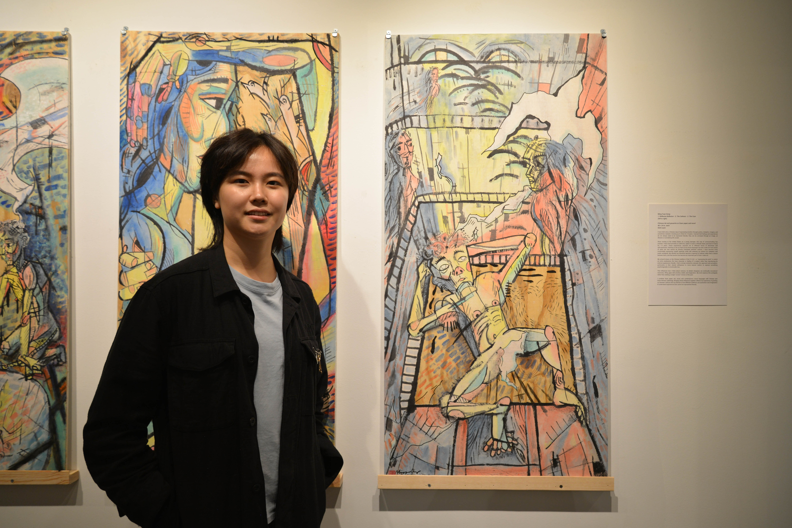

Mingyuan Dong (Ming, b. 2000) is an interdisciplinary artist whose practice explores psychological surrealism through painting,
drawing, and installation. Dong's work asks how memory, dreams, and lived experience shape the way people
understand themselves and the world around them. The practice develops intuitively, using Chinese ink,
Xuan paper, and wood through mark-making to let images and associations emerge rather than illustrating
predetermined stories. Through this process, emotionally charged spaces emerge that invite viewers to find
their own connections between the familiar, the imagined, and the subconscious.
••••••••••
Dong’s recent work explores the relationship between Chinese cultural roots and Greco-Roman traditions. Traditional Chinese materials and techniques are combined with a contemporary visual language, using physical qualities such as the fluidity of ink, the absorbency of Xuan paper, and the layered opacity of Chinese pigments to build ambiguous, emotionally charged narratives. The paintings often hold opposing feelings at once, balancing hope and melancholy while leaving room for viewers to construct their own interpretations.
Dong’s background in industrial design also shapes the practice. Interests in engineering, construction, and human behavior inform the geometric structures within the paintings. Particular attention is given to the tension between engineered structure and emotional spontaneity, creating what can be described as psychological architecture: spaces in which memory, dreams, and emotion follow their own internal logic rather than the rules of physical reality.
Across the practice, Dong pursues what the Surrealists described as “the more real than the real”—a reality found beneath conscious explanation. By trusting intuition and the subconscious, psychological experiences that resist straightforward language take visual form, creating images that remain open-ended and invite viewers to encounter their own memories, emotions, and associations.
MingYuan Dong | All rights reserved.